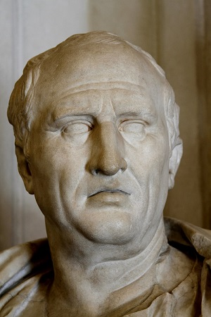

Cicero has been traditionally considered the master of Latin prose, with Quintilian
declaring Cicero was "not the name of a man, but of eloquence itself." He is credited with transforming Latin from a modest utilitarian language into a versatile literary medium capable of expressing abstract and complicated thoughts with clarity. He is credited with transforming Latin from a modest utilitarian language into a versatile literary medium capable of expressing abstract and complicated -- but of eloquence itself." He is credited with transforming Latin from a modest utilitarian language into a versatile literary medium capable of expressing abstract complicated thoughts with clarity. Cicero has been traditionally considered the master of Latin prose, with Quintilian declaring Cicero was "not the name of a man, but of eloquence itself." He is credited with transforming Latin from a modest utilitarian language into a versatile literary medium capable of expressing abstract and complicated thoughts with clarity. He is credited with transforming Latin from a modest utilitarian language into a versatile literary medium capable of expressing abstract and complicated.